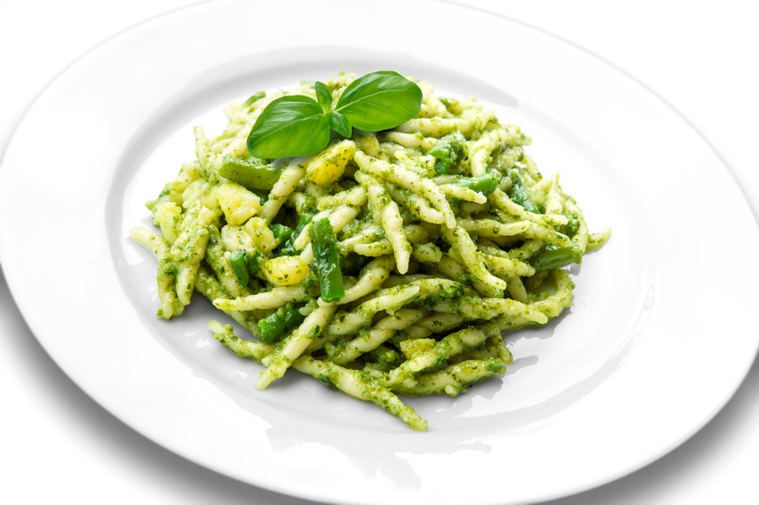

Pasta al Pesto

Description:
Pasta with pesto is a classic first course prepared with basil pesto.
A delicious and fragrant condiment, basil pesto can be prepared in five minutes and with very few ingredients!
Ingredients:
- 320g pasta
- 150g basil
- 40g grated parmesan
- 25g pine nuts
- extra vergin olive oil
- salt
Steps:
- To prepare the pasta with pesto, immediately heat the water to cook the pasta.
- Meanwhile, wash and dry the basil well with a clean cloth.
- We put the basil in the blender bowl, add the oil, salt, garlic and pine nuts.
- Blend intermittently for a few seconds. This way the pesto will not heat up too much, maintaining its bright green color.
- We then add the grated cheese and blend again intermittently until we obtain the right consistency.
- Drain the pasta al dente and season it with plenty of pesto. Our pesto pasta is ready! Sprinkle it with grated cheese and decorate with two basil leaves before serving.